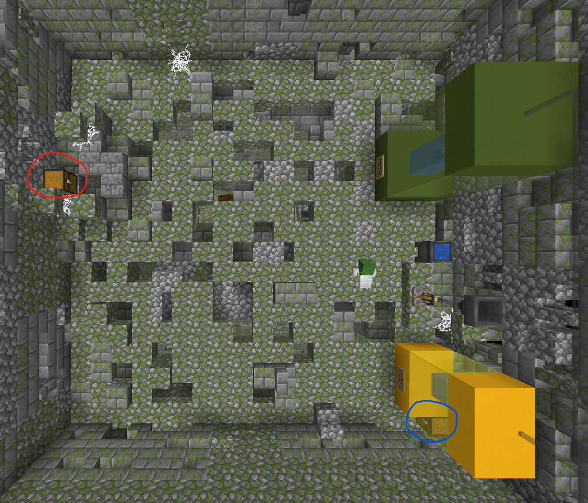

by xtsdcb69
大厅
大厅: Re6 | 加工: xtsdcb69
成就"发臭又发绿的发酵奶桶"在图中红圈位置，成就"堆成圆锥的奶粉"在图中蓝圈位置。
在上图的右下方中还有一个唱片盒和许多唱片，是Re6制作的。使用材质包将会播放一些自定义的曲子，其中就包括印尼宽带和MEGALOVANIA.
第 1 关 - 别踩白块 - ★★★☆☆
创意&创作: Re6 | 加工: xtsdcb69 | 测试: xtsdcb69, tuffkotte, Re6
一旦你通过了这一关，那么你踩到白块上就无法再次死亡。想要再次死亡，必须重新踩下本关的压力板。
第 3 关 - milk boy playing♂dark♂game in dark♂underground♂ arena
创意&创作: Re6 | 加工： xtsdcb69 | 测试: xtsdcb69, Re6
成就"黑暗中丢失的眼睛"在图中所示位置。
第 4 关 - 逃离实验室
创意&创作: xtsdcb69 | 加工: tuffkotte | 测试: xtsdcb69
在B4保险箱的上面有个"IMPORTANT!!!"的保险箱，里面装着一本和保险箱名字一样的书。内容为:
牛奶肯定发现
第四关里面
基本上大多都是
英语了
所以他就知道
这个铁定是xt做的了
在Technology Support房间里，每个人的名字都有讲究。
Donald Trump与Joe Biden分别是美国第45任和第46任总统，而坐在最里面的Kaguya Miller中的Kaguya来自《辉夜大小姐想让我告白～天才们的恋爱头脑战～》中的辉夜 (かぐや); Miller则来自人教版英语课本七年级上册中出现的一个姓氏。
最开始的密码房是只有18位密码的。后来xts觉得不够有难度，于是就把它扩展到了34位。
成就"一条鱼栽种"在图中红圈位置，成就"♀孩纸的丝袜"在图中蓝圈位置，成就"曾经守护这片地方的主人留下的木炭"在图中橙圈位置。
当打开装有成就"♀孩纸的丝袜"的箱子时，会触发一段对话。随后，该对话不能再被触发。
<Im_SwordFish> woc 真是个好door♂西
<tuffkotte> 啊确实awa
第 5 关 - 办公大楼的信仰之跃
创意&创作: xtsdcb69 | 加工: tuffkotte | 测试: xtsdcb69
该关的背景是法国的一个废弃的实验室，所以墙上都挂着法国国旗，而告示牌等地方也都是用法语。
在场景中，时不时会有一些粉色皮革头盔。据参与内饰的玩家之一剑鱼描述，该实验室是一个人体实验室，而该物品模仿的是脑子。
该关的成就在第4层，可以通过图片上方的蜘蛛网安全降落。
成就"试验记录"在图中红圈位置。
成就"试验记录"的中文为官方中文，法语应该是机翻。
Page 1
Les chinois disent que le tofu puant est de plus en plus bon, donc nous devons trouver un catalyseur pour faire du tofu puant et du lait de soja de haute qualité
(中国人说过: 臭豆腐越臭越上品，于是为了药剂的高质量，我们不得不寻找让臭豆腐和腐乳变得高质量的催化剂)
Page 2
Heureusement, nous l'avons trouvé dans un endroit au Japon appelé niyazawa. C'est, non, un individu, une puanteur à la bouche. Nous avons décidé de le ramener à la maison
(幸运的是，我们在日本一个叫下什么泽的地方找到了。这个东西，不，应该说是个人，一开口就是一股恶臭。我们决定把他带回到国家)
Page 3
Il est bien connu que le son est insoluble dans l'eau. Nous avons donc dû tremper l'homme dans le cylindre d'essai. Il a fredonné trois fois (me rappelant le célèbre livre des trois fredonnements en Chine),
(众所周知，声音不溶于水。因此我们不得不把这个人泡到实验缸里。他哼了三声（让我想起了中国有名的《三哼经》），)
Page 4
puis a crié dans l'eau et a provoqué une réaction violente, ce qui m'a fait penser que le biogaz avait explosé. C'est pour ça qu'on a dû mettre un masque à gaz.
(然后在水里叫起来，引起了剧烈的反应，这味道让我以为沼气爆炸了。因此我们不得不戴上防毒面具。)
Page 5
Peu de temps après, il a arrêté de crier, et l'odeur persistante dans l'air m'a dit que nous avions réussi
(不久，他不叫了，空气中挥之不去的味道告诉我，我们成功了)
Page 100
神 马 都 没 有！
打开图中蓝圈位置的箱子后，你会收到一个来自@的私信。该私信随时能再被触发。
不会法语怎么办？自己上百度翻译啊awa(或者去本图官方网站 https://xtsgames.top/puremilk/milkmaps/2/specialeggs )
这个 milkmaps/2/ 地址是在Milkmappers成立之前使用的地址，在成立之后就进行了路径迁移，迁移到了现在的 milkmappers/maps/2/ . 本地址已作重定向处理，因此可以正常访问。
在第4层还有两个机器。绿色机器上的告示牌是:
Cinq extraits de lait de soja et de toufu puant
(豆浆和臭豆腐的五种提取物)
而黄色机器上的告示牌是:
Extrait de citron
(柠檬提取物)
两个机器中间还有一个酿药台，里面有一瓶药水。这瓶药水的名字是"Soupe tonique" (滋补汤)，还有两段描述。
Les scientifiques français à travers la recette secrète chinoise ont développé la soupe de tonique Shiquan!
On dit que c'est la recette d'un chinois nommé Lao Ba
(法国科学家通过中国的秘密秘方研制了十全滋补汤!)
(据说是一个叫老八的中国人的菜谱)
喝下它后，你会直接死亡，不管你正处于什么游戏模式。
第 7 关 - 极限找不同
创意&创作: xtsdcb69, tuffkotte | 加工: sky_bow_chrs | 测试: xtsdcb69
成就"王 者 的 庇 护"在图中所示位置，需要从水塘进入。地图1和地图2都能被找到。
当打开装有成就"王 者 的 庇 护"的箱子时，会触发一段对话。该对话随时能再被触发。
不是你这人很怪啊!
怎么老爱钻下♂面